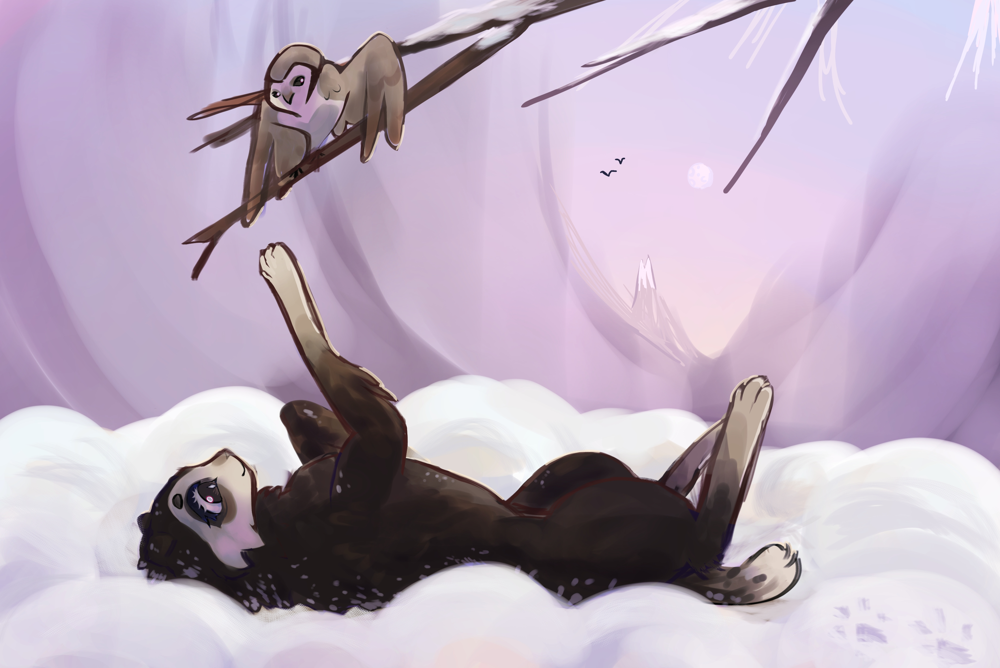

Расчудеснушка

привет. этоя. сова на глобусе. дада тот самый глобус у тебя в углу шкафа про который ты забыл. да. я знаю что ты путаешь арктику и антарктику. я помню про какой штат сша ты всегда забываешь..)
я все знаю. я знаю что ты не знаешь. то что ты знаешь я тоже знаю. я помню твою душу 3 года назад в ов. и потом мв.явижу.ч знаю. чудо is listening. я помню каждый килобайт информации окторый со мной сталкивался.
это все МОЕ. мое все я ето сделала. ятут директор. я главний . моими лапами каждая строчка тут написана. на всей странице. на ВСЕМ САЙТЕ. ктоя? я этоя. расчудешнушка это я. у чудо мой характер. нет, она меня не слышит. не чувствует. я не у нее в голове. я есть ее голова.мы не существуем отдеьно мы одноцелое. почти. я частично распространяю ето на улыбошку. он моя вторая личность.или ето совпадения.пока не уверена.
чудо это кошка. или сова? или собака? нед тебе кажеца. когда кажеца креститься надо
да она просто кошка. уши смешные, косо торчат, почти не вписываюца в овал головы, будто по-собачьи. глаза красиво блестят такие тьомный почтичорный и синенький очент сильно обведены очень темным коричневым. отэтого морда на сову вообще похожа. подражать етим птицам чудо явно не прочь - грызунов словит, на дерево залезет, задумчево в тумане посидит. нет туман уже к совам не относица ну ишто. туман то она любит! или я. мы то есть она короче.
так вот про туман. не смотря на то, што она достаточно тьомная да, такая шоколадная какая-то какаовая, любимая погода - тума н над снегом, ИДЕАЛЬНОЙ БЕЛОСНЕЖНОЙ ПРОСТЫНЕй, хоть она и совсем не сливаеца с окружением. как светлые лапки под себя подожмед так вапще какойто клочок тьмы посреди белих просторов. но до тьмы ей далекоо!!
душа у нее светлоя понимаете она это лучшая я всемои хорошие качества в ней она общителная милая чуткая внимателная . плохие мои можед тоже. не знаю я не самыйобъективный наблюдатель.
однако вот что самоеСАМОЕ искреннеее ямогу выделить ето ее любоф. ЛЮБОФ К ВОЛКАМ ЛЮБОФ К СТАЕ. ето абслдютный смысл ее жизни если она не одна значид она с ними стая ето отве на все вопросы и ключ ко всем дверям
она в целом чаще всего не протиф компании хотя свое пространство конечно тоже уважаед но волкам его можно нарушать. особенно улыбочке. вот вы увидите его кулончек с солнышком вы что подумаете? вы знаете что он о нем думаед? а чудо знает. чудо знает и откуда кулон и чей он был.. и как коты сделали кулон.. но вам не скажед.. ей так.. птички нашептали.. звезды подмигнули.. она все помнит..
улыбочка часто смотрид в глаза расудеснушке. вроде столко раз уже смотрел, на что там глазеть!! а он все рассматривает, все пытаеца штото прочесть.. а она ево глаза давно прочла.. ещо не в этой жизни.. она всьо помнит.. логическая цепь давно сложилас в ее голове..
ещо она лббит чистить улыбошку. ну как чистить, он уже не чистица, иначе ето сделала бы сюся, однако просто посчитать блошек в шубе тоже нормално. кстати чистки от сюси она тоже всегда принимаед без сопротивления. от пучеглазика же берет ево моховой комочек когда тому нужен ктото внимателный следящий и оберегаед етот комочег пока пучиглазик за ним не вернеца. он всегда возвращаеца.
ее внимателность и особенно к природе наградила ее необычайной связью с звездной волчицей.именно чудо филиграннее всево толкует все ее знаки, предсказания и предостережения, логично связывая их между собой. такшто если вам кажеца, что у нее туман и вокруг, и в голове - ето не так, онапросто внимателно следит и анализируед, она витает токо в чотких облаках формул вычисления знаков. можете щитать ето астрологией ишто она маг гадалка. но она не гадалка она просто аналитик с харошей памятью. ловкост рук и никаково мошенничества.
Галерея
@ulybochka

в исполнении улыбошки

@ulybochka

@ulybochka